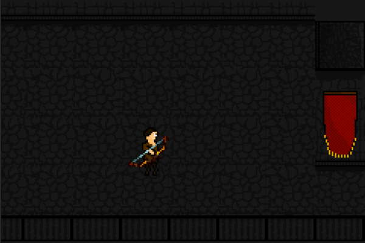
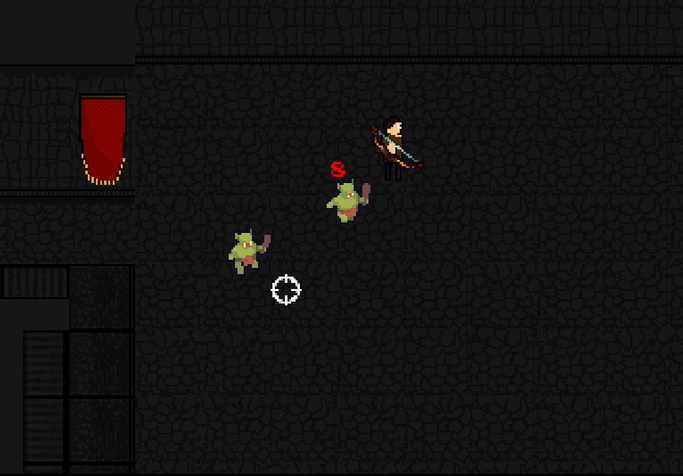
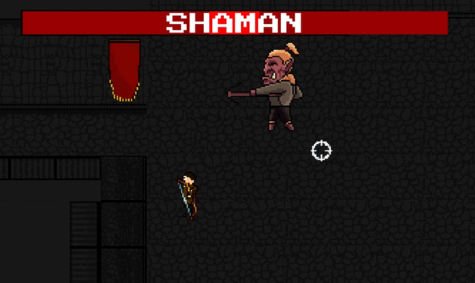
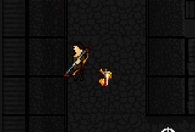
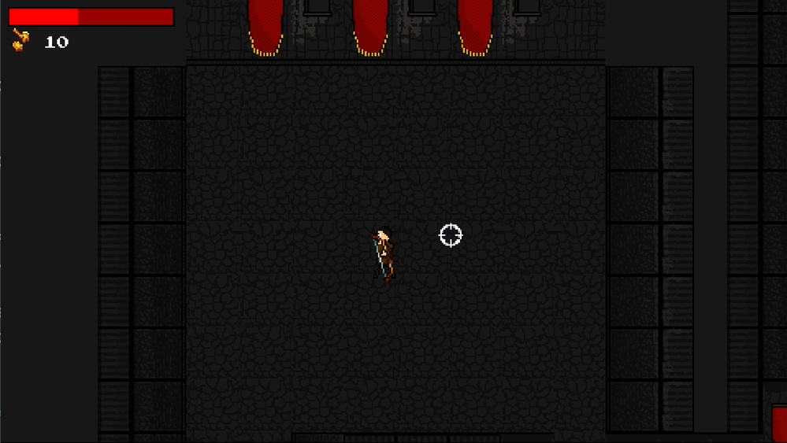
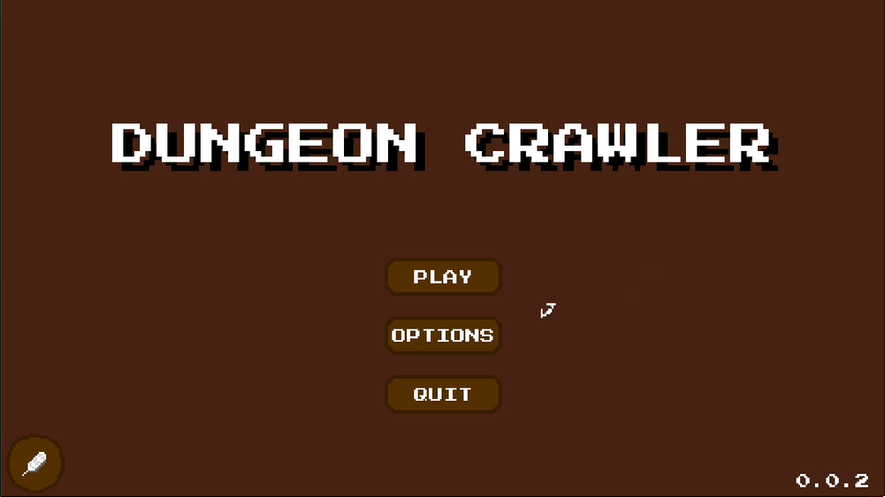
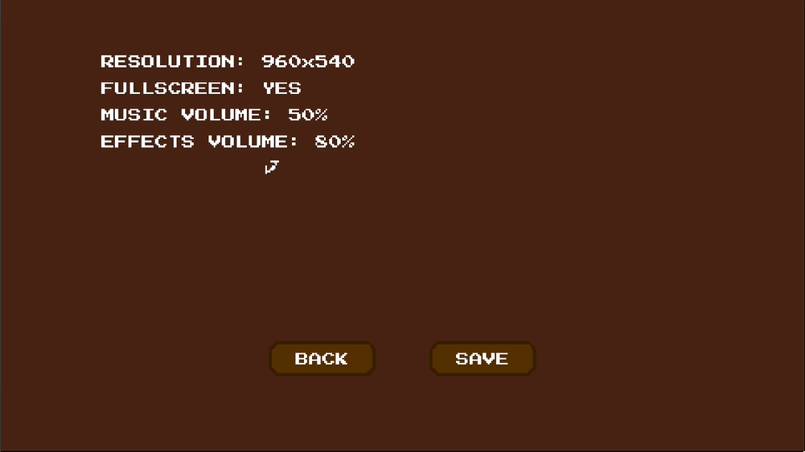

WITAJ W DUNGEON CRAWLER - PYTHON'OWSKIEJ PRZYGODZIE Z UŻYCIEM PYGAME!

Rozpocznij ekscytującą podróż przez tajemnicze lochy wypełnione zdradliwymi wrogami,
ukrytymi skarbami i epickimi bitwami w tej klasycznej grze dungeon crawler stworzonej w Pythonie
i Pygame.
Funkcje:
- Postać Gracza:
Opanuj odważnego bohatera uzbrojonego w broń dystansową, poruszającego się po wymagających lochach.

- Przeciwnicy:
Zróżnicowana gama wrogów, od groźnych orków po potężnych bossów, z unikalnymi wyzwaniami i strategiami.

- System Walki:
Wejdź w ekscytującą walkę, wykorzystując łuk, aby pokonać wrogów, unikając ich ataków. Opanuj sztukę precyzji i czasu, aby wyjść zwycięsko.
- Zbieranie Przedmiotów:
Zbieraj cenne łupy, takie jak złoto, mikstury zdrowia i inne przedmioty, które pomogą ci w niebezpiecznej podróży.

- HUD (Interfejs gracza):
Śledź swoje istotne statystyki, w tym zdrowie, złoto i
więcej, za pomocą przyjaznego dla użytkownika interfejsu.

- Menu:
Poruszaj się po prostym i intuicyjnym menu głównym, które pozwala rozpocząć nową grę i dostosować ustawienia z łatwością.

- Ustawienia:
Twoje ustawienia są zapisywane, zapewniając płynne doświadczenie z grą za każdym razem, gdy wracasz do przygody.

Jak grać:
1.
Pobierz Dungeon Crawler
2. W prawym górnym rogu kliknij "Pobierz wszystko" lub zaznacz wszystkie pliki, kliknij prawym przyciskiem myszy i wybierz "Pobierz".
3. Rozpakuj grę.
4. Uruchom plik main.exe.
Wersje:
0.0.1:
Demo przedstawiające główne menu, ustawienia, napisy końcowe oraz krótki poziom gry z orkami i potężnym Szamanem Orków Bossem. Chociaż to tylko krótki wgląd, pokazuje on ekscytujące możliwości gry.
0.0.2:
- ikona gry
- możliwość gry w formie pliku wykonywalnego
Konfiguracja:
Dostosuj swoje ustawienai w grze, dostosowując takie rzeczy jak rozdzielczość ekranu, dźwięk i
tryb pełnoekranowy zarówno w grze, jak i edytując plik config/config.txt.
Struktura Projektu:
Dobrze zorganizowana struktura projektu z folderami zawierającymi moduły i klasy do
postaci, broni, tła, wrogów, HUDu, przedmiotów, muzyki i menu. Poziomy gry są zdefiniowane w plikach CSV, a zasoby, takie jak grafika i pliki dźwiękowe, są starannie zorganizowane.
Kod źródłowy:
Kod źródłowy jest dostępny na moim Githubie:
DungeonCrawler
Autorzy:
Kacper Baryłowicz ("malybaryl"): Kreatywny umysł stojący za skryptami i znaczną częścią grafik gry. Zachęcam do Grania w grę!
Licencja:
Skrypty są udostępnione do darmowego użytku, z prośbą o zachowanie ostrożności, ponieważ niektóre zasoby są z zewnętrznych witryn, a dodatkowe informacje można znaleźć w pliku credits/credits.txt.
Zanurz się w świecie Dungeon Crawler, gdzie przygoda czeka za każdym rogu!